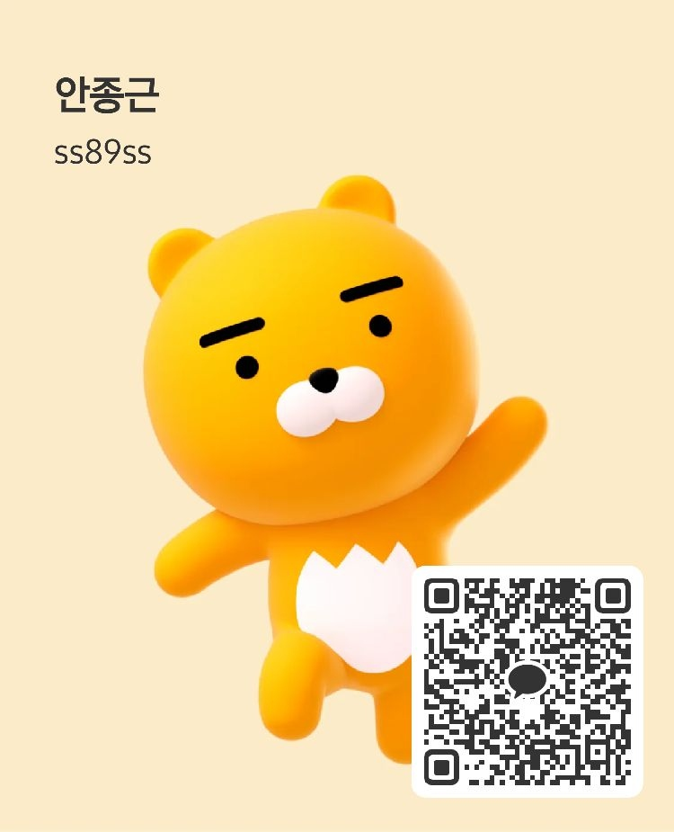

보장 분석 리포트
기존 가입 보험 증권을 분석해 보장 누락·중복·과다 납입 여부를 표로 정리한 PDF 리포트를 드립니다.
- 3대 진단·수술·입원·실손 매트릭스
- 월 보험료 대비 보장가치 분석
- 재설계 우선순위 3안
인카금융서비스 · 40개+ 보험사 취급
한 명의 담당자가 비교·가입·청구·사후관리까지 책임집니다.
가입 상품에 얽매이지 않고 고객 상황을 먼저 봅니다.
평일·주말 09:00–21:00 · QR 스캔 또는 카톡 상담 버튼으로 바로 연결됩니다.
CARRIERS · 취급 보험사
특정 상품에 얽매이지 않고 고객 상황에 가장 맞는 조합을 찾습니다.
위 외에도 인카금융서비스 제휴 보험사를 모두 취급합니다. 자세한 목록은 상담 시 안내드립니다.
SERVICES · 상담 서비스
기존 가입 보험 증권을 분석해 보장 누락·중복·과다 납입 여부를 표로 정리한 PDF 리포트를 드립니다.
연령·직업·기존 보장을 반영해 2~3개 보험사 조합안을 제안합니다. 필요 없는 특약은 빼드립니다.
사고·진단 발생 시 필요 서류 리스트를 카톡으로 전달하고, 청구 절차 진행을 옆에서 돕습니다.
가입 후 3개월·1년·3년 시점 정기 점검. 소득·가족 구성 변화가 있을 때 재설계 상담을 이어갑니다.
보험심사평가사·손해사정업무 경험을 바탕으로, 실제 지급까지 다닌 병원 데이터와 심사 기준을 함께 확인해드립니다.
증권 사진 한 장만 보내주시면 무료 분석부터 시작합니다.
무료 보장 분석 신청CLAIM CHECK · 보험금 지급 확인
고지의무가 제대로 됐는지 궁금하거나, 나중에 보험금이 안 나올까 불안한 분들을 위한 지급 가능성 사전 확인 프로세스입니다.
지금 지급 가능성 확인실제 지급까지 다닌 병원 데이터를 통해 청구 이력과 지급 가능 범위를 분석·파악합니다.
손·생보험금 보험심사평가원 기준을 통해 전문적으로 파악한 뒤 이해하기 쉽게 안내드립니다.
전문 손해사정 미팅으로 지금까지 놓친 보험금 미지급 건이 있는지 함께 확인합니다.
“병원 진단서에 따라서 보험금 지급이 천차만별입니다.
제대로 된 보험금 결과로 보답하겠습니다.”
본 서비스는 보험 상담 및 지급 가능성 사전 안내이며, 최종 보험금 지급 여부는 각 보험사 심사 결과에 따라 결정됩니다.
PROCESS · 상담 절차
이름·연락처·궁금한 점만 남겨주시면 그날 안에 연락드립니다.
기존 가입 증권을 카톡으로 받아 20~30분 통화 상담을 진행합니다.
분석 결과와 재설계 옵션을 PDF로 정리해 보내드립니다. 가입 강요 없음.
결정하신 경우에만 가입 진행. 이후 3개월·1년 시점에 정기 점검합니다.
CLIENT VOICES · 고객 후기
실제 상담 고객의 이니셜 후기입니다. 원문 확인은 상담 시 안내드립니다.
“증권 몇 개를 어디서 들었는지도 몰랐는데, 리포트 한 장으로 정리가 됐어요. 중복 특약 두 개 정리하고 월 4만원 아꼈습니다.”
“아이 진단 나왔을 때 청구 서류를 카톡으로 하나씩 알려주셔서 정신없는 와중에 큰 도움이 됐어요.”
“누수 났을 때 새벽이었는데도 답 주시고 업체까지 연결해주셨습니다. 보험 청구도 같이 봐주셔서 편했어요.”
“다른 설계사는 상품부터 들이대는데, 안종근 총괄팀장님은 지금 든 것부터 다시 보자고 하셔서 신뢰가 갔습니다.”
FAQ · 자주 묻는 질문
아닙니다. 보장 분석 리포트까지는 전액 무료이며, 가입은 고객이 결정하실 때만 진행합니다. 강요·재촉 없습니다.
가능합니다. 유지 중인 보험은 그대로 두고 중복·누락 분석만 도와드릴 수 있습니다. 반드시 갈아탈 필요는 없습니다.
가능하지만, 자동차보험은 다이렉트 대비 큰 차이가 없는 경우가 많습니다. 필요 시 조건을 비교해 드립니다.
선택 가능합니다. 대부분 카톡·전화·화상으로 진행하며, 인천·서울·경기 지역은 대면 미팅도 가능합니다.
상담을 위해 수집한 정보는 상담·설계 목적 외에는 사용되지 않으며, 상담 종료 후 파기됩니다. 자세한 내용은 개인정보처리방침을 참고해 주세요.
LET'S TALK · 상담 신청
이름과 연락처, 관심 항목만 남겨주시면 영업일 기준 3시간 내 회신드립니다.
아래 QR을 카카오톡 카메라로 스캔하시면
바로 친구추가 화면으로 연결됩니다.
